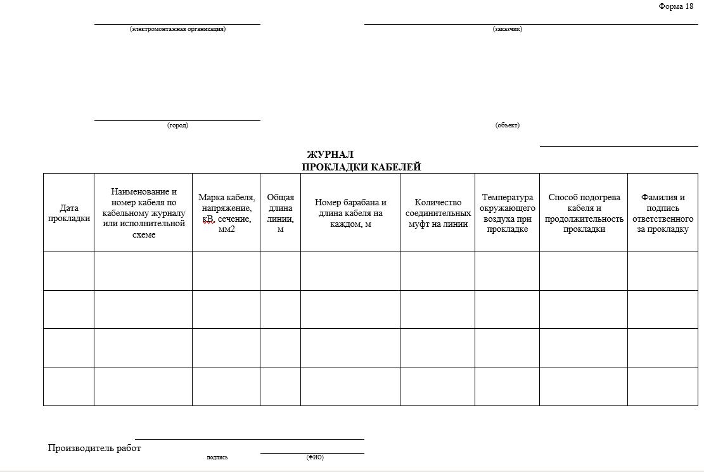
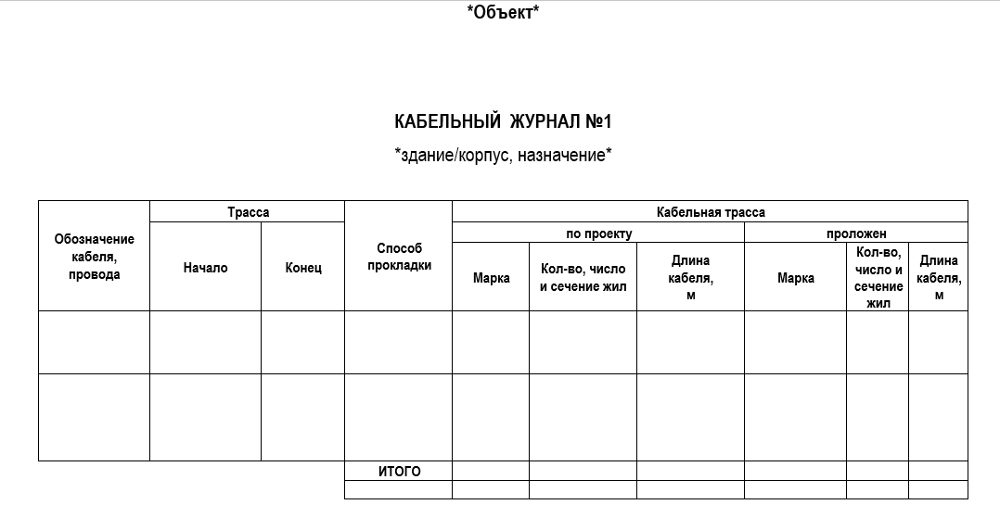
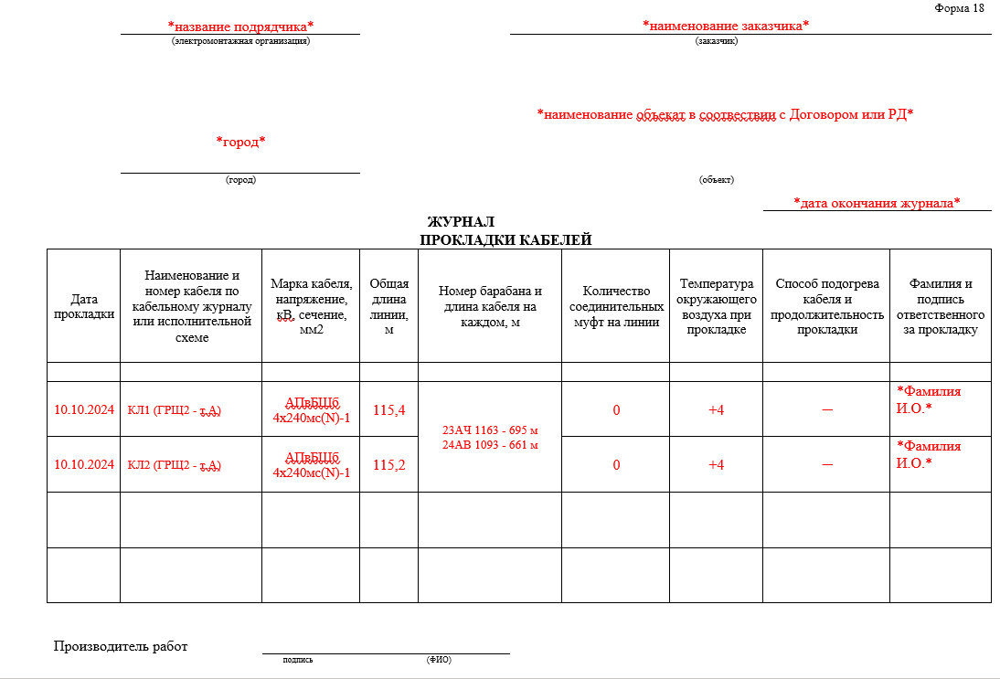
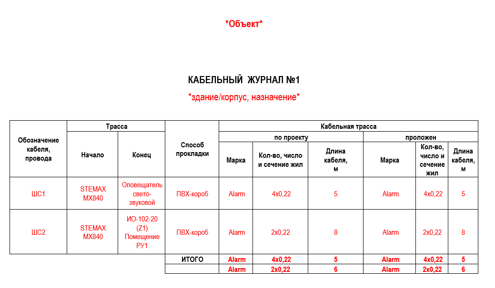

Кабельный журнал/журнал прокладки кабелей

Журнал прокладки кабелей имеет две формы:
- Для прокладки наружного кабеля (в земле). Принимается по форме 18 Инструкция по оформлению приемо-сдаточной документации по электромонтажным работам И1-13-07.
- Для прокладки внутреннего кабеля (слаботочные системы). Форма журнала не регламентирована, она принимается по форме, согласованной с проектной организацией. Рекомендованные формы представлены в ГОСТ 70444-2022 приложения А и Б.



Дата прокладки – заполняется дата производства работ, она должна совпадать с датой в Журнале общих работ.
Наименование и номер кабеля – прописывается номер линии, он должна совпадать в номером в Контрольно-исполнительной съемке (КИС), указывается направление прокладки.
Марка кабеля, напряжение, сечение – заполняется с паспорта на материал. Марка кабеля для прокладки применяется в зависимости от назначения, напряжения и условий эксплуатации.
Общая длина. В разные дни можно проложить разную длину линии. Общая длина указанной линии должна соответствовать КИС. Обратите внимание, что длина указывается без учета запаса на змейку и разделку (эти данные отражаются только в КС-2), но длина должна учитывать прогибы в ГНБ и заходы в здания.
Номер барабана и длина кабеля – данные заполняются с паспорта на материал.
Количество соединительных муфт – при большой протяженности одной линии не обойтись без монтажа соединительных муфт. Обратите внимание, что общее количество муфт на линии должно совпадать с КИС и КС-2.
Температура окружающего воздуха – данная графа важна особенно при отрицательных температурах, т.к. от используемой изоляции кабеля зависит возможность прокладки в осенне-зимний период. Подробные условия прокладки указаны в паспорте или на сайте производителя.
Способ прогрева – указывается способ и продолжительность прогрева (например, устройство тепляков).
Фамилия и подпись ответственного – указываются данные ответственного за производство работ согласно приказа.

Обозначение кабеля, провода - прописывается номер провода.
Начало и конец трассы – исходное оборудование, от которого проложен провод и конечное оборудование, питание или сигнал к которому проложен указанной линией.
Способ прокладки – от открытой прокладки до ПВХ труб или ПВХ коробов.
Проект и факт (проложили»):
Марка кабеля (провода) - заполняется с паспорта на материал. Марка провода для прокладки применяется в зависимости от назначения и напряжения.
Количество, число и сечение жил - данные заполняются с паспорта на материал.
Длина кабеля – указывается длина проложенной линии.
Требует уточнения на 24.09.2026. Обозначение «ГОСТ 70444-2022» из исходного урока не найдено точным совпадением в поиске Росстандарта. Проверьте исходный документ перед применением; учебный текст не исправлялся.
{kind=link}
{kind=link}
{kind=link}
{kind=link}